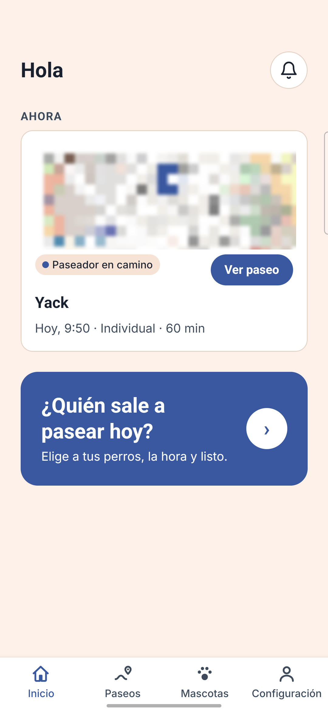

Waggo: paseos de perros con verificación y seguimiento
Lo construido, lo que sabemos del mercado de Bogotá y lo que el piloto debe demostrar. Con las cifras tal como salen del estudio, incluido el margen delgado.
Estudio de mercado consultado el 28 de octubre de 2026 · cada cifra dice si es Dato, Cálculo o Supuesto y de qué fuente sale.
Lo esencial, sin adornos
- Hay mercado, pero no sabemos cuánto paga por paseo. ~806.200 hogares con perro en Bogotá Cálculo; no hay dato público de cuántos pagan paseador.
- El producto está construido y desplegado; no hay usuarios reales medidos. El piloto validará las hipótesis.
- El margen por paseo es delgado: $1.283 en un individual de 30 min y $464 en un grupal de 30 min, después de pasarela e IVA Cálculo.
- Punto de equilibrio operativo ≈ 2.800 paseos/mes (≈ 467 dueños activos) Cálculo. El escenario base no lo alcanza en 24 meses.
- Capital de operación ≈ $47,5 M a 12 meses y ≈ $77,5 M a 24 meses Cálculo, sin salarios de fundadores ni de desarrollo.
- Lo que mueve el resultado es la frecuencia, los costos fijos y el margen por paseo (~$47–50 M); el volumen, solo ~$4 M Cálculo.
Fuentes: negocio/mercado/00-resumen.md y 03-viabilidad-financiera.md; [3][4] hogares con perro; precios y comisión del código (R1, R5). Los escenarios de capital usan supuestos (lámina 15).
El paseo se contrata hoy de forma informal
- Informal y sin registro: WhatsApp, conjuntos residenciales y avisos. No hay registro público de cuántos paseadores hay Dato [48][41]. El protocolo del Distrito es no obligatorio: máx. 8 perros, chaleco, mayoría de edad [48].
- La regla va a cambiar: la Ley 2480 de 2025 pide registro de prestadores, certificado de primeros auxilios caninos y máx. 8 perros por paseador; reglamento técnico ~ene-2027 y transición ~jul-2027 Dato [41].
- Qué pasa sin control, en otros mercados: reseñas recientes de Wag! (EE. UU.): «A confirmed walker three days prior never showed up» (3-oct-2026) Dato [29].
- La competencia local ya habla de confianza: verificación de antecedentes [16], seguro SURA [18][20] y GPS [16][20]. Es requisito de entrada, no diferencial.
Hipótesis de producto, no medida: el dueño quiere saber dónde está su perro y qué pasa si algo sale mal. Es lo que el piloto debe confirmar.
Fuentes: [41] Ley 2480 de 2025; [48] protocolo IDPYBA (Res. 061 de 2019); [29] Trustpilot Wag!, consultado 2026-10-28; [16][18][20] fichas de competidores. «No encontré dato público» del número de paseadores informales (fuentes.md).
Un paseo que se sigue y se paga al terminar
Pedir en tres pasos
Dónde, quién y cuánto; precio visible antes de confirmar (RF-007, RF-019).
Paseador verificado
Documento cifrado y aprobación manual de un administrador (RF-002/003).
El más cercano acepta
Búsqueda por cercanía con PostGIS, a menos de 5 km (RF-006).
Paseo en vivo
Ruta en el mapa, distancia y tiempo (RF-008, RF-011).
Alertas y emergencia
Salida de zona (1,5 km), detención (10 min) y botón de emergencia (RF-009, 010, 012).
Pago retenido
Se retiene al pedir y se cobra al terminar; pasarela simulada hoy (RF-015 a 018).
Todas son funciones con spec Implementada. Aún no hay: notificaciones push, cobro real con tarjeta, verificación automática de antecedentes ni calificaciones.
Fuentes: specs/ del repositorio (estado Implementada) y R6, R8, R9, R12, R13; ver lámina 6 para las cifras de ingeniería. Valores de umbrales (1,5 km, 10 min, 5 km) son provisionales en las specs.
La app: capturas reales y diseño aprobado

Real · Inicio

Real · Paseo en camino
Diseño aprobado · confirmar y pagar
Diseño aprobado · paseo en vivo
- Insignia Paseador verificado
- Botón Emergencia siempre a mano
- Precio y comisión visibles antes de confirmar
- Ruta, distancia y tiempo en vivo
Fuentes: capturas del equipo en un Samsung Galaxy A35 (presentaciones/_capturas), con el mapa difuminado porque muestra una ubicación real; diseño: design/propuesta/pantallas. El diseño puede diferir en detalles de texto de la app desplegada. Datos de las pantallas: de ejemplo.
Lo construido y lo que aún no existe
- app.mywaggo.com y api.mywaggo.com responden (200, comprobado el 2026-10-28)
- Despliegue automático a AWS en cada cambio a main; base PostgreSQL + PostGIS
Lo que hoy no hay
- Usuarios reales medidos: dueños, paseadores o paseos pagados
- Ingresos
- Pasarela de pago real, seguro y verificación automática
El piloto de 12 semanas medirá si las hipótesis se sostienen.
Fuentes (Dato, contado del repositorio el 2026-10-28): presentaciones/tecnica/guion.md (comando de cada cifra); specs/README.md; comprobación con curl. Son métodos de prueba definidos, no ejecuciones ni cobertura.
Hogares con perro: hay; paseo pagado: sin dato
de los hogares de Bogotá tiene perro (2021: 26,6 %) Dato [3][4]
hogares con perro: 2,9 M de hogares × 27,8 % Cálculo [3]. Con la proyección 2026 (3.125.885 hogares [5]): 868.996 Cálculo.
- El sector de mascotas en Colombia vende más de $6 billones al año Dato [13][14], pero 80–90 % es alimento y veterinaria Dato [14].
- Hogares con mascota: 44 % en 2025 (40,4 % en 2021) Dato [3][4].
- Sin dato público de cuántos hogares pagan paseador. La única señal: 4 % de 402 propietarios usaba guardería, seguros o adiestramiento (encuesta antigua, ~2018–2019, muestra pequeña) Dato [12].
Fuentes: [3] El Tiempo, 2026-10-28 y [4] Región Capital (prensa sobre la Encuesta Multipropósito 2025; el boletín oficial 2025 no se encontró); [5] SDP/DANE; [12] SDDE; [13] Agronegocios; [14] Infobae. Cálculo: 2.900.000 × 27,8 % = 806.200; 3.125.885 × 27,8 % = 868.996.
Del total de Bogotá al segmento inicial del piloto
Cálculo los tres primeros; SOM = 64.906 × 0,5 % / 1,5 % / 3 % = 325 / 974 / 1.947 hogares Supuesto; piloto: RNF-006 Dato (repo).
Usaquén tiene 80,2 % de sus predios residenciales en estratos 4–6 y Chapinero 42,9 % en estrato 6 Dato [11]. La zona del piloto (5 UPZ): 101.053 hogares proyectados a 2026 Dato [6].
Fuentes: 02-mercado-y-demanda.md. [1][2] DANE EM 2021 (mascotas por localidad; 65,8 % de ellos con perro); [5] hogares 2026; [6] hogares por UPZ; [11] Catastro, Censo Inmobiliario 2025. Supuestos del cálculo: tenencia por localidad de 2021, 65,8 % de perros igual en todas, estrato del predio = estrato del hogar. No se usa el % de estratos de Suba (reconstruido, sin verificar).
Cuántos pagarían: tres escenarios supuestos
| Bajo | Medio | Alto | |
|---|---|---|---|
| % de hogares que pagan paseador Supuesto | 10 % | 20 % | 30 % |
| Paseos al mes por hogar Supuesto | 2 | 4 | 8 |
| Hogares (sobre 64.906) Cálculo | 6.491 | 12.981 | 19.472 |
| Paseos al mes Cálculo | 12.981 | 51.925 | 155.774 |
| Valor bruto anual de los paseos (GMV) Cálculo | $2.718 M | $10.873 M | $32.619 M |
El GMV es lo que pagan los dueños, no un ingreso de Waggo. Lo que Waggo retiene por paseo es una fracción pequeña (lámina 13). El porcentaje que paga paseador y la frecuencia son el supuesto más importante a medir en el piloto.
Fuentes: 02-mercado-y-demanda.md §5. Fórmulas: hogares = 64.906 × %; paseos/mes = hogares × frecuencia; GMV = paseos/mes × 12 × $17.450 (ticket de la mezcla base, Supuesto: 50 % individual 30 min, 30 % individual 60 min, 20 % grupal 60 min; precios del código R1, R5). Sin dato público de penetración del paseo pagado.
Qué tiene cada uno, solo lo verificado
| Característica | Waggo (repo) | Wakypet | Mywak | PetBacker |
|---|---|---|---|---|
| El más cercano acepta (tipo Uber) | ✅ R13 | ✅ [15] | — | ❌ [24] |
| Seguimiento en vivo | ✅ R7 | ✅ [16] | ✅ [20] | — |
| Alertas automáticas (zona, detención) | ✅ R8 | — | — | — |
| Botón de emergencia | ✅ R9 | — | — | — |
| Chat dentro de la app | ✅ R10 | ❌ [15] | ✅ [20] | ✅ [24] |
| Pago retenido hasta terminar | ✅ R6 (simulado) | — | — | ✅ 7 días [24] |
| Verificación de antecedentes | ❌ manual R12 | ✅ [16] | — | ✅ documento [24] |
| Seguro para la mascota | ❌ | ✅ SURA [18] | ✅ SURA [20] | — |
| Precio individual 30 min | $15.500 R5 | $13.900 (2024) [22] | $8.000–10.000 (2024) [22] | 1 h: $39.000 [23] |
| Comisión al paseador | 20 % R1 | 15 % / 10 % [17] | — | — |
✅ verificado en la fuente · ❌ la fuente dice que no · — no se encontró dato público. Todo Dato; precios de 2024 pueden haber cambiado.
Fuentes: 01-competencia.md §4. [15][16][17] Wakypet (sitio); [18] ficha de Google Play de Wakypet (se omiten sus descargas y calificación: no verificadas de forma independiente); [20][21] Mywak; [22] Pulzo, 2024; [23][24] PetBacker; R = repo de Waggo. Precio de Waggo 11,5 % sobre el de Wakypet 2024 (Cálculo).
Tres diferenciales posibles, todos por validar
Alertas automáticas
Salida de zona (1,5 km) y detención (10 min). No encontré que Wakypet ni Mywak las publiquen. Evidencia de que importa: indirecta.
Medir: repetición a 30 días con y sin alertas.
Emergencia con un toque
No encontré botón publicado por competidores locales; ellos ofrecen seguro. Hoy no avisa a soporte: sin una persona de guardia no es vendible.
Medir: paso del primer al segundo paseo.
Pago retenido
PetBacker libera el pago a los 7 días; Wakypet y Mywak no publican cómo cobran. Pasarela simulada hoy.
Medir: confirmación en la pantalla de pago.
No son diferencial
Mapa en vivo (Wakypet [16] y Mywak [20] lo anuncian) y asignación por cercanía (Wakypet [15]). Hay que igualarlos con calidad.
Brechas frente a lo local
Seguro para la mascota (SURA en Wakypet [18] y Mywak [20]) y verificación de antecedentes publicada (Wakypet [16]). Waggo verifica a mano.
Fuentes: 04-diferenciales.md; [15][16][18][20][24]; R6, R8, R9, R12. Posicionamiento propuesto (hipótesis): «el paseo que te avisa si algo sale mal y que solo se cobra cuando termina», siempre que se cierren antes las brechas de seguro y verificación.
Waggo cobra comisión y queda poco
- Individual 30 min: $15.500; comisión 20 % = $3.100 Dato (repo R1, R5, provisional R4). Wakypet cobra al paseador 10–15 % Dato [17].
- Pasarela (Wompi): 2,65 % + $700 + impuestos por transacción aprobada Dato [33][34]. IVA 19 % Dato [43], aplicado a la pasarela y, si Waggo es responsable de IVA, a la comisión ⚖️.
- Margen retenido: $1.283 = 8,3 % del precio Cálculo. Hoy el código no separa IVA ni costo de pasarela (R2).
Fuentes: 03-viabilidad-financiera.md, tabla 1. Cálculo: pasarela = (15.500 × 2,65 % + 700) × 1,19 = 1.322; IVA de la comisión = 3.100 − 3.100 / 1,19 = 495; margen = 3.100 − 495 − 1.322 = 1.283. ⚖️ lo debe validar un contador. No incluye retenciones ni ICA.
El margen depende del tipo y la duración
- El paseo individual de 30 min deja $1.283; el grupal de 30 min, $464 Cálculo.
- Un paseo de 60 min deja $2.307 (individual) Cálculo.
- Rango: $464 a $4.355 según tipo y duración Cálculo.
- El precio no cambia con el número de perros (1 a 3) Dato (R18).
- El estudio recomienda evitar el grupal de 30 min como producto de entrada.
Fuentes: 03-viabilidad-financiera.md, tabla 1 (neto B: con IVA en la comisión); precios del código R1, R5, R18 (provisionales, R4); pasarela [33][34]; IVA [43]. Soporte (Supuesto $300 por paseo) no está descontado aquí.
Palancas que el estudio propone evaluar
| Palanca | Efecto por paseo individual de 30 min Cálculo | Riesgo |
|---|---|---|
| Cobrar paquetes de 8 paseos en una sola transacción | La pasarela baja de $1.322 a $593 por paseo (+$729) | Choca con la retención por paseo del diseño actual; requiere decisión de producto |
| Subir la comisión a 25 % | +$651 por paseo | Wakypet cobra 10–15 % [17]: puede costar oferta de paseadores |
| Trasladar la pasarela al dueño como tarifa de servicio | +$1.322; precio final $16.822 | 21 % sobre Wakypet 2024 ($13.900 [22]) |
| Empujar paseos de 60 min | Margen $2.307 vs $1.283 | Depende de una demanda sin dato |
| Evitar el grupal de 30 min | Solo deja $464 | — |
Son opciones a estudiar con datos del piloto, no resultados. Ninguna está probada ni implementada hoy; cualquier cambio de precio es configuración (R1), no desarrollo.
Fuentes: 03-viabilidad-financiera.md §4 y 05-plan-de-lanzamiento-bogota.md §5. Cálculos: paquetes = (124.000 × 2,65 % + 700) × 1,19 / 8; comisión 25 % = (15.500 × 25 % / 1,19 − 1.322) − (15.500 × 20 % / 1,19 − 1.322).
Los supuestos del modelo: todos por validar
| Variable Supuesto | Conservador | Base | Optimista |
|---|---|---|---|
| Margen por paseo (después de pasarela, IVA y soporte) | $1.000 | $1.250 | $1.700 |
| Paseos al mes al mes 12 | 600 | 2.500 | 6.000 |
| Crecimiento de los meses 13 a 24 | ×1,5 | ×2 | ×2,5 |
| Paseos al mes por dueño activo | 4 | 6 | 8 |
| Abandono mensual de dueños | 15 % | 10 % | 7 % |
| CAC (costo por dueño activo nuevo) | $80.000 | $40.000 | $20.000 |
| Costos fijos mensuales | $3,5 M | $3,5 M | $3,5 M |
Los costos fijos excluyen salarios de fundadores y del equipo de desarrollo. Incluyen: 1 coordinador de operación y soporte (~$2,6 M con prestaciones), contador y legal externos ($0,5 M), nube ($0,15 M) y herramientas ($0,25 M).
Fuentes: 03-viabilidad-financiera.md §2 (todos Supuesto, rango bajo / medio / alto). Referencias: CPC de Meta en Colombia ~US$0,22 ≈ $700 [49] (benchmark privado); SMMLV 2026 $1.750.905 [40]. No hay dato público de frecuencia, abandono ni CAC de apps de paseo en Colombia.
El caso base no llega al equilibrio en 24 meses
| Conservador | Base | Optimista | |
|---|---|---|---|
| Equilibrio operativo (paseos/mes) Cálculo | 3.500 | 2.800 | 2.059 |
| Paseos/mes, mes 12 → 24 Supuesto | 600 → 900 | 2.500 → 5.000 | 6.000 → 15.000 |
| Primer mes con flujo ≥ 0 Cálculo | No llega | No llega | Mes 7 |
| Capital de operación a 12 meses Cálculo | $60,0 M | $47,5 M | $12,0 M |
| Capital de operación a 24 meses Cálculo | $125,4 M | $77,5 M | Positivo |
| LTV / CAC Cálculo | 0,33 | 1,9 | 9,7 |
Base: equilibrio en 2.800 paseos/mes ≈ 467 dueños activos con 6 paseos al mes. Necesita ≈ $47,5 M a 12 meses y ≈ $77,5 M a 24 meses sin salarios de fundadores ni de desarrollo.
Una relación LTV/CAC menor que 1 (conservador: 0,33) significa que cada cliente adquirido destruye valor. Optimista: máximo acumulado negativo de $12,0 M y +$139,6 M acumulado a 24 meses Cálculo.
Fuentes: 03-viabilidad-financiera.md §3 (modelo mensual de 24 meses sobre los supuestos de la lámina 15). Equilibrio = costos fijos / margen por paseo (3,5 M / 1.250 = 2.800). LTV = margen × frecuencia / abandono. Los resultados son tan buenos como sus supuestos: ninguno tiene dato propio todavía.
Lo que mueve el resultado
Mover ±30 % el volumen cambia el resultado solo ~$3,9 M; mover los costos fijos, la frecuencia o el margen por paseo, ~$47–50 M Cálculo. Crecer en volumen no resuelve un margen que apenas cubre su costo de adquisición.
Fuentes: 03-viabilidad-financiera.md §5: cada variable ±30 % con las demás fijas, sobre el escenario base (acumulado a 24 meses −$77,5 M, Cálculo). Naranja: peor caso; verde: mejor caso. Cifras en $ millones.
Núcleo del piloto: Usaquén sur + Chapinero norte
- 5 UPZ: Santa Bárbara, Usaquén, Country Club, Chicó Lago y El Refugio: 101.053 hogares proyectados a 2026 Dato [6].
- Hogares con perro en estratos 4–6, Usaquén + Chapinero: 64.906 Cálculo.
- Piloto cerrado: hasta 500 dueños y 50 paseadores Dato (RNF-006), 12 semanas de operación Supuesto.
- Capacidad de oferta: 50 paseadores × 3 paseos/día × 22 días = 3.300 paseos/mes Cálculo (3 paseos/día Supuesto).
- El matching busca a menos de 5 km (R13): un núcleo compacto concentra oferta y demanda.
| Fase Supuesto | Duración |
|---|---|
| F0 Preparación (lámina 20) | 6–8 semanas |
| F1 Piloto cerrado, medición semanal | 12 semanas |
| F2 Ampliación: Los Cedros y Teusaquillo, si F1 pasa umbrales | 3 meses |
| F3 Suba, tras validar su estrato | según F2 |
Fuentes: 05-plan-de-lanzamiento-bogota.md §1, §2, §7; [6] SDP/DANE hogares por UPZ; [11] Catastro; R13, R16. Tiempos y fases: Supuesto propuesto para que el PO los apruebe. Suba no se usa hasta verificar su porcentaje de estrato en el PDF de Catastro.
El piloto decide: seguir, ajustar o parar
| Métrica Supuesto | Umbral para seguir | Si falla |
|---|---|---|
| Solicitudes aceptadas en menos de 10 min | ≥ 85 % | Más paseadores o zona más pequeña |
| Paseos completados / aceptados | ≥ 95 % | Revisar verificación y penalidades |
| Dueños con ≥ 2 paseos en 30 días | ≥ 40 % | Revisar producto y precio |
| Paseos por dueño activo al mes | ≥ 6 | Paquetes o suscripción |
| Margen real por paseo (pasarela real) | ≥ $1.250 | Paquetes, duración, comisión |
| CAC | ≤ $40.000 | Cambiar de canal |
| LTV / CAC | ≥ 1,9; parar si < 1 | Rediseñar el modelo |
| Emergencias atendidas por una persona en menos de 5 min | 100 % | No ampliar |
Regla: seguir si se cumplen las 3 primeras y LTV/CAC ≥ 1; ajustar si fallan 1–2; parar o rediseñar si LTV/CAC < 1 al cierre.
Fuentes: 05-plan-de-lanzamiento-bogota.md §6: todos los umbrales son Supuesto propuesto, a aprobar o ajustar por el PO. Referencia de ingreso del paseador ≥ $8.000/hora [27].
Qué falta antes del primer paseo real
- Pasarela real elegida y cotizada (Wompi, Mercado Pago o PayU); hoy simulada (R6).
- Seguro o póliza de responsabilidad: SURA asegura a Wakypet y Mywak [18][20]; sin precio público para paseadores.
- Verificación de antecedentes y certificado de primeros auxilios caninos, que la Ley 2480 de 2025 exigirá [41].
- Emergencias atendidas por una persona de guardia (panel de alertas pendiente, R12; push pendiente, R11).
- Revisión legal: relación con paseadores (Ley 2466 y Decreto 991 de 2026, escritos para reparto [42]), datos personales (Ley 1581 [44]) y consumidor (Ley 1480 [45]) ⚖️.
- Mapas para producción: los tiles públicos de OpenStreetMap son solo para desarrollo y piloto (R7).
- Concepto contable: IVA sobre la comisión, retenciones e ICA ⚖️.
- Lista de espera y encuesta de demanda (n ≥ 300) en el núcleo.
Fuentes: 05-plan-de-lanzamiento-bogota.md §7 (F0) y 04-diferenciales.md; [18][20][41][42][44][45]; R6, R7, R11, R12. ⚖️ = lo debe validar un abogado o contador. Preparación estimada en 6–8 semanas (Supuesto).
Uso de fondos: categorías, sin montos
| Categoría | Lo que el estudio tiene hoy |
|---|---|
| Pasarela real | 2,65 % + $700 + impuestos por transacción (Wompi) Dato [33]; autorización liberada y dispersión: sin dato, por cotizar |
| Seguro / póliza | Sin precio público para paseadores; por cotizar |
| Verificación y certificado | Antecedentes y primeros auxilios caninos; costo por cotizar |
| Soporte y guardia de emergencias | 1 coordinador ≈ $2,6 M/mes con prestaciones Supuesto; soporte $300 por paseo Supuesto |
| Adquisición de dueños | CAC base $40.000 Supuesto; CPC de Meta ≈ $700 Dato [49] |
| Nube | ≈ US$48/mes ≈ $153.000/mes Cálculo [36][37][38][39] |
| Legal, contable y herramientas | $0,5 M + $0,25 M al mes Supuesto |
Esta presentación no propone un monto de ronda. El único dato de necesidad de caja es la operación del escenario base (lámina 16), que excluye salarios de fundadores y de desarrollo.
Fuentes: 03-viabilidad-financiera.md §1–2 y 05-plan-de-lanzamiento-bogota.md. Nube: ECS Fargate US$9,01 + ALB US$22,27 + RDS US$11,68 + ~US$5 = ~US$48 × TRM $3.185,01 [39] (Cálculo con precios públicos de AWS [36][37][38]).
Los riesgos principales y qué haremos
| Riesgo | Evidencia | Mitigación propuesta |
|---|---|---|
| Comisión mayor que la de Wakypet | 20 % (R1) vs 10–15 % [17] | Comisión de lanzamiento de 15 % para los primeros 50 paseadores Supuesto: baja el margen del individual 30 min de $1.283 a ~$632 Cálculo |
| Margen insuficiente | $464 a $1.283 en paseos cortos | Paquetes, paseos de 60 min, tarifa de servicio (lámina 14) |
| Regulación de paseadores | Ley 2480: primeros auxilios, registro, multas 5–20 SMMLV [41] | Incluir el certificado en la verificación desde el piloto |
| Régimen laboral de plataformas | Ley 2466 / Decreto 991, hoy para reparto [42] | Concepto legal antes de escalar ⚖️ |
| Incidente grave con una mascota | Quejas de seguridad en Wag! [29]; competidores aseguran [18][20] | Póliza y protocolo con persona de guardia |
| Demanda menor a la supuesta | Sin dato público de penetración | Encuesta previa y lista de espera; sin pauta antes de F1 |
| Reacción de la competencia | Wakypet da el primer paseo gratis [18] | Diferenciar por alertas y pago retenido, no por precio |
Fuentes: 00-resumen.md y 05-plan-de-lanzamiento-bogota.md §8. Cálculo de la comisión de 15 %: 15.500 × 15 % / 1,19 − 1.322 = 632 (neto de pasarela, con IVA en la comisión).
Datos que faltan y cómo se conseguirán
| Falta | Cómo conseguirlo |
|---|---|
| % de hogares que pagan paseador, frecuencia y precio aceptado | Encuesta a la lista de espera (n ≥ 300) y datos del piloto |
| Tenencia de perro por localidad y estrato (2025) | Microdatos de la Encuesta Multipropósito 2025 |
| Retención, frecuencia y CAC reales | Piloto de 12 semanas (tabla de umbrales) |
| Tarifas reales de pasarela (autorización liberada, dispersión) | Cotización con Wompi, Mercado Pago y PayU |
| IVA sobre comisión, retenciones e ICA | Concepto de contador |
| Encaje de los paseadores en la Ley 2466 / relación laboral | Concepto de abogado laboral |
| Costo de póliza de responsabilidad para paseadores | Cotización con aseguradoras |
| Precios y descargas actuales de Mywak | Cliente incógnito (su sitio no publica precios) |
Fuentes: 00-resumen.md («Datos que faltan») y fuentes.md («No encontré dato público»). Las fuentes de prensa sobre la Encuesta Multipropósito 2025 [3][4] no sustituyen el boletín oficial, que no se encontró.
Por confirmar por el PO
Esta lámina queda como marcador de posición: nombres, cargos y experiencia los define el PO. No se incluyó ninguna persona.
Lo que sí es verificable del equipo hoy es cómo trabaja: desarrollo guiado por especificaciones con TDD y agentes de IA especializados, descrito en la presentación técnica (presentaciones/tecnica).
Fuente: presentaciones/tecnica/guion.md. Pendiente de confirmar por el PO: integrantes, roles y dedicación.
El piloto responde lo que hoy no sabemos
- Producto construido y desplegado; sin usuarios reales medidos.
- Margen delgado y equilibrio en ~2.800 paseos/mes: depende de la frecuencia, los costos fijos y el margen por paseo.
- Piloto de 12 semanas en Usaquén sur + Chapinero norte, con umbrales para seguir, ajustar o parar.
Entra a app.mywaggo.com para ver el producto.
Fuentes numeradas usadas en esta presentación
| [1·2] | DANE, Encuesta Multipropósito 2021 (boletín y comunicado) |
| [3] | El Tiempo, 2026-10-28: EM 2025 (prensa) |
| [4] | Región Capital: EM 2025 (prensa) |
| [5] | SDP/DANE: hogares por localidad 2018–2035 |
| [6] | SDP/DANE: hogares por UPZ 2018–2035 |
| [11] | Catastro Bogotá: Censo Inmobiliario 2025 |
| [12] | SDDE: Nota editorial 189, Mascotas (antigua) |
| [13] | Agronegocios, 2026-04-29: mercado de mascotas |
| [14] | Infobae, 2026-08-05: 34.000 empresas y $6,1 billones |
| [15] | Wakypet: sitio, inicio |
| [16] | Wakypet: paseadores de perros |
| [17] | Wakypet: cómo ser paseador (comisión) |
| [18] | Google Play: Wakypet (ficha; descargas y calificación no usadas) |
| [19] | Google Play: Paseadores Wakypet |
| [20] | App Store: mywak |
| [21] | Mywak: sitio |
| [22] | Pulzo, 2024-02-19: cuánto cobra un paseador |
| [23] | PetBacker: perfil en Chapinero |
| [24] | Google Play: PetBacker |
| [27] | CazVid: oferta de Doggy Walker ($8.000/hora) |
| [29] | Trustpilot: reseñas de Wag! |
| [33] | Bancolombia: Wompi 2,65 % + $700 |
| [34] | Enter.co: tarifa de Wompi (2.ª fuente) |
| [36] | AWS Fargate: precios |
| [37] | AWS Elastic Load Balancing: precios |
| [38] | AWS RDS PostgreSQL: lista de precios |
| [39] | Portafolio, 2026-10-23: TRM $3.185,01 |
| [40] | ConsultorSalud: SMMLV 2026 |
| [41] | Ley 2480 de 2025 (Ley Kiara) |
| [42] | Decreto 991 de 2026 (Ley 2466) |
| [43] | DIAN: IVA 19 % (Oficio 1902/2017) |
| [44] | Ley 1581 de 2012: datos personales |
| [45] | Ley 1480 de 2011: consumidor |
| [48] | Bogotá: condiciones para paseadores (Res. 061/2019) |
| [49] | Superads: CPC de Facebook Ads en Colombia |
| [R] | Repositorio de Waggo (R1 a R18): precios, specs y código |
Todas consultadas el 2026-10-28 salvo las fechas indicadas. URL completa de cada [n] en negocio/mercado/fuentes.md. Cifras no usadas por no verificadas: descargas, calificación y reseñas de Wakypet en Google Play; % de estratos de Suba.